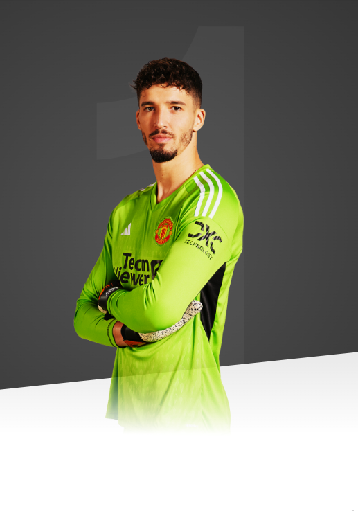

It is a huge honour to join Manchester United and become the first Turkish player to represent this incredible club.

age
25
appearances
0
clean sheets
0
BIOGRAPHY
The goalkeeper arrives at Old Trafford with 166 career appearances and 53
clean sheets to his name, becoming Manchester United's first-ever Turkish player.
Bayindir spent his formative years in the youth systems of Bursaspor, Arabayatagispor, Bursa Yolspor and Ankaragucu in his native country, before making his senior debut for the latter club.3
He helped Ankaragucu achieve consecutive promotions in the 2016/17 and 2017/18 seasons, as they reached the Super Lig, before making his Turkish top-tier bow in November 2018.
Altay made 17 appearances in his first-ever Super Lig campaign, keeping five clean sheets. Turkish giants Fenerbahce came calling ahead of the 2019/20 term and he completed a subsequent switch to the Istanbul-based club in July 2019.
Bayindir's clean-sheet tally doubled from five to 10 across his first two seasons in the Turkish city, and his exploits didn't go unnoticed by his country, who called him up for UEFA Nations League qualifiers against Hungary and Russia in November 2020. He had previously represented his nation at several youth levels.
It wasn't until seven months later, however, that the goalkeeper made his senior international debut, playing in a 2-1 friendly win over Azerbaijan in May 2021.
Over the previous two terms, Bayindir has added Champions League, Europa League and Europa Conference League experience to his CV with Fenerbahce and played his part in their run to lifting the Turkish Cup in 2022/23.
The Turkey international's performances caught the attention of Erik ten Hag and co at United, before the shot-stopper was acquired as our fourth signing of the summer 2023 transfer window, completing his move to Manchester on deadline day.